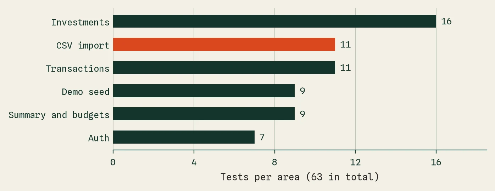

SpendGauge
| Stack | FastAPI, SQLAlchemy, SQLite, React, Recharts, JWT, Docker, Render |
|---|---|
| Size | 20 endpoints, 63 tests, 95% coverage on core logic |
| Live | fin-dash-web.onrender.com (the free server can take up to a minute to wake up) |
| Code | github.com/Mohit-web12/fin-dash |
The question
I wanted one place to see where my money goes each month without typing in every transaction. Banks export CSV files, so the app had to take a CSV, figure out what each row is, and never double count anything if the same file gets uploaded twice.
What I did
The backend is FastAPI with SQLAlchemy over SQLite. Every route except login and the health check needs a JWT.
| Area | Routes | Count |
|---|---|---|
| Auth and health | login, current user, health check | 3 |
| Accounts | list, create | 2 |
| Transactions | list with filters and paging, create, read, update, delete | 5 |
| CSV import | POST /ingest/csv | 1 |
| Budgets | list, set, delete | 3 |
| Summary | spend by category, monthly totals, budget vs actual | 1 |
| Investments | positions, breaks, trades, place order, reset demo | 5 |
The importer is the part I care about most. It reads the file with pandas, normalizes the headers, and sorts each row into a category with merchant rules, so Uber lands in Transport and Whole Foods in Groceries. Then it builds a dedupe key for every row: a SHA256 hash of the user, the date, the amount rounded to cents, and the merchant in lowercase. It loads the user's existing keys once per upload instead of querying per row, skips anything it has already seen, and reports what it inserted, what it skipped, and which rows had errors.
The front end is React with Recharts: three gauges for spend, income and net, a monthly trend, and budgets against actual spending. It's deployed on Render from one render.yaml, with the API as a Docker service and the front end as a static site.
What I found
Render's free plan wipes the SQLite file on every deploy and restart. Without a fix, anyone opening the demo would log in to empty gauges. So the demo account reseeds six months of history on boot. It uses a fixed random seed, so the demo looks the same every time, and dates relative to the current month, so it always opens on recent data.
The Investments page reads from my trade engine through a server to server proxy. The engine has no auth of its own, so SpendGauge's JWT is what guards it. When no engine is connected, like on Render, the page serves its own demo data instead of an error.

What I'd do next
- Move from SQLite to Postgres, so real users' data survives a restart instead of only the demo's.
- Let people fix a category once and have the app remember it for that merchant.
- Host the trade engine next to the app, so the live Investments page shows real breaks.